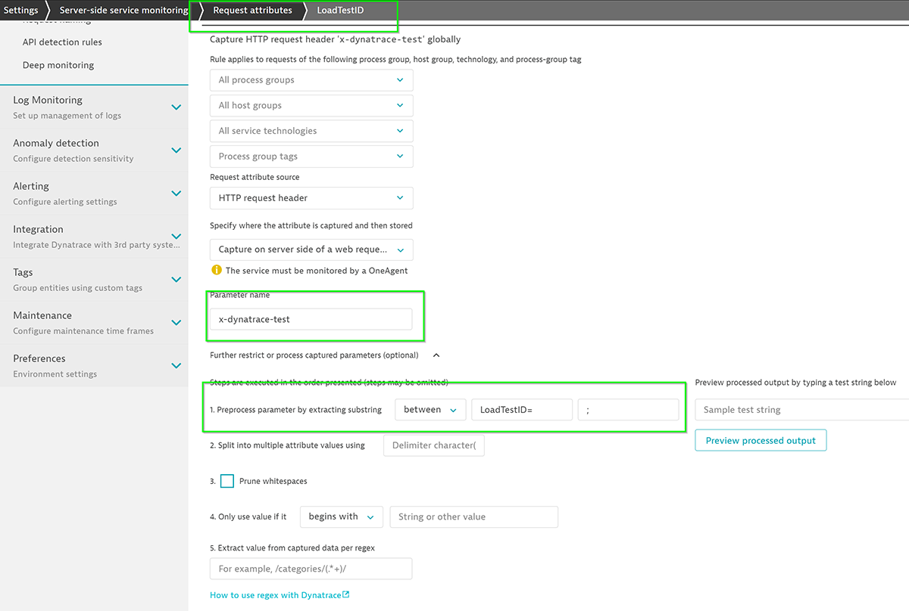
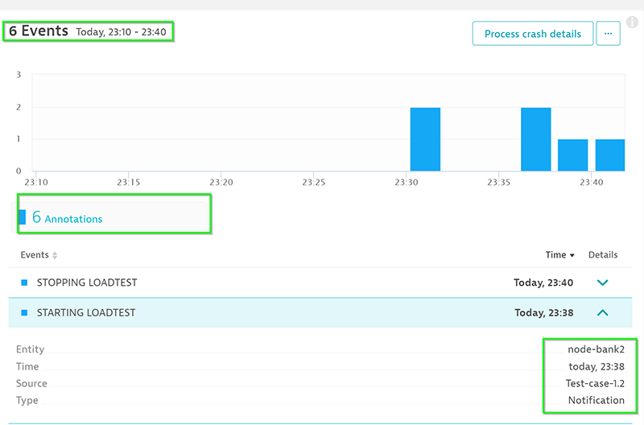

This lab is the first lab of the Automate Feedback track, AIOps Enablement Series for ANZ Bank.
Prerequisites
The script to install all the pre-requisites in order to run a hands-on session for AIOps. A simple Bash script will set-up a fully functional Single Node Dynatrace installed and required dockers installed. This script can be used to run the commands on a LINUX/UBUNTU Server 18.04 LTS & 20.04 LTS. Inspired by Keptn-in-a-box
🥜 Features in a Nutshell
- Update the ubuntu repository
- Installation of Docker (for building own Docker images)
- Installation of Microkubernetes
- Set up of useful BASH Aliases for working with the command line
- Installation of Dynatrace ActiveGate and configuration of Cluster and Workload monitoring
- Enabling own Docker Registry for the Cluster Installation of Dynatrace OneAgent.
- Create a user account and copy the standard user (ubuntu on this case) with his own home directory (a replica) and allowing SSH connections with text password.
- Useful for spinning an army of workshop clusters.
- Download apache-jmeter which can be used in order to showcase Jenkins/Dynatrace integration.
- Download proprietary Jenkins docker image created for such workshop.
- Download proprietary Sample Bank Application Docker created for bank organizations.
- Download standard ansible-tower which could be used for workshop.
- Download the Dockerfile/repositories required to run the workshops.
📚 More about the script
Script has boolean flags which can act as control flags in order to enable/disable the features. Currently, the available features would have multiple dockers installed, however, moving forward more features can be added - for example, micro-k8s can be added to control and spin these dockers or a keptn on top of k8s. The repository mainly contains the following file:
- install-workshop-tech-stack.sh
- install-prerequisites.sh
Setup
Run the script in the available machine
- Log in into your Ubuntu image
- Clone the repo and navigate to the directory
git clone https://github.com/nikhilgoenkatech/ACMD1Workshops.git ; cd ACMD1Workshops
- Execute the file with sudo rights.
sudo bash -c './install-workshop-tech-stack.sh &'
- For inspecting the installation on realtime type:
less +F /tmp/install.log
By integrating Dynatrace into your existing load testing process, you can stop broken builds in your delivery pipeline earlier.

Tag tests with HTTP headers
While executing a load test from your load testing tool of choice (JMeter, Neotys, LoadRunner, etc) each simulated HTTP request can be tagged with additional HTTP headers that contain test-transaction information (for example, script name, test step name, and virtual user ID). Dynatrace can analyze incoming HTTP headers and extract such contextual information from the header values and tag the captured requests with request attributes. Request attributes enable you to filter your monitoring data based on defined tags.

Full integration and approach is documentatedhere
You can use any (or multiple) HTTP headers or HTTP parameters to pass context information. The extraction rules can be configured via Settings > Server-side service monitoring > Request attributes.
The header x-dynatrace-test is used in the following examples with the following set of key/value pairs for the header:
Code | Description |
VU | Virtual User ID of the unique user who sent the request. |
SI | Source ID identifies the product that triggered the request (JMeter, LoadRunner, Neotys, or other) |
TSN | Test Step Name is a logical test step within your load testing script (for example, Login or Add to cart. |
LSN | Load Script Name - name of the load testing script. This groups a set of test steps that make up a multi-step transaction (for example, an online purchase). |
LTN | The Load Test Name uniquely identifies a test execution (for example, 6h Load Test – June 25) |
PC | Page Context provides information about the document that is loaded in the currently processed page. |


Creating Tags
Tagging is a powerful mechanism. However, to reap its benefits, tagging should be used carefully and in a meaningful way. To guide you towards this end, we provide you with specific recommendations and best practices, which are described below. With auto-tagging based on metadata, tags can be generated automatically and assigned to monitored entities with the specific metadata values that Dynatrace detects automatically.
Naming Rules
Dynatrace automatically provides names, but they don't enable you to quickly identify where an application or service belongs to. To achieve this, it's recommended that you use service naming rules and process group naming rules. This can be done in Dynatrace using metadata imported from the monitored applications.
You can use Dynatrace Naming Rules to differentiate requests

Documentation here
Annotate Dynatrace with Events
The Events API delivers details about all uncorrelated events that Dynatrace collects within your environment. Information returned for each event includes attributes about the event source, the entity where the event was collected, and other event-specific details.
PUSH endpoint enables third-party systems such as CI platforms (Jenkins, Bamboo, Electric Cloud, etc.) to provide additional details for Dynatrace automated root cause analysis.

Documentation here
Compare and Analyze events
There are different ways to analyze the data. Your approach should be based on the type of performance analysis you want to do (for example, crashes, resource and performance hotspots, or scalability issues).

Documentation here
The steps that we ran through could be automated with by initiating HTTP requests through curl.

We hope you enjoyed this lab and found it useful. We would love your feedback!